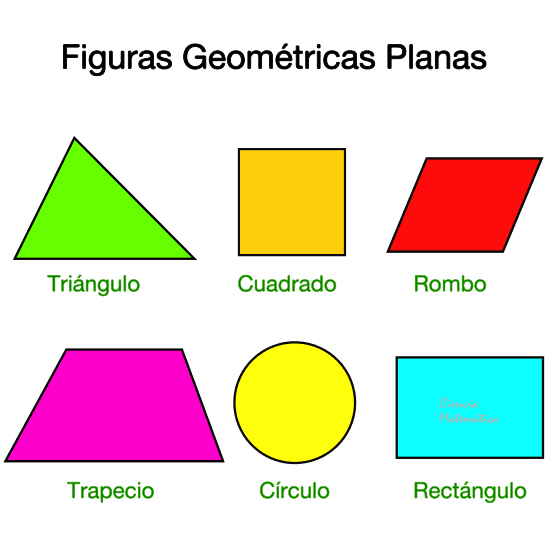
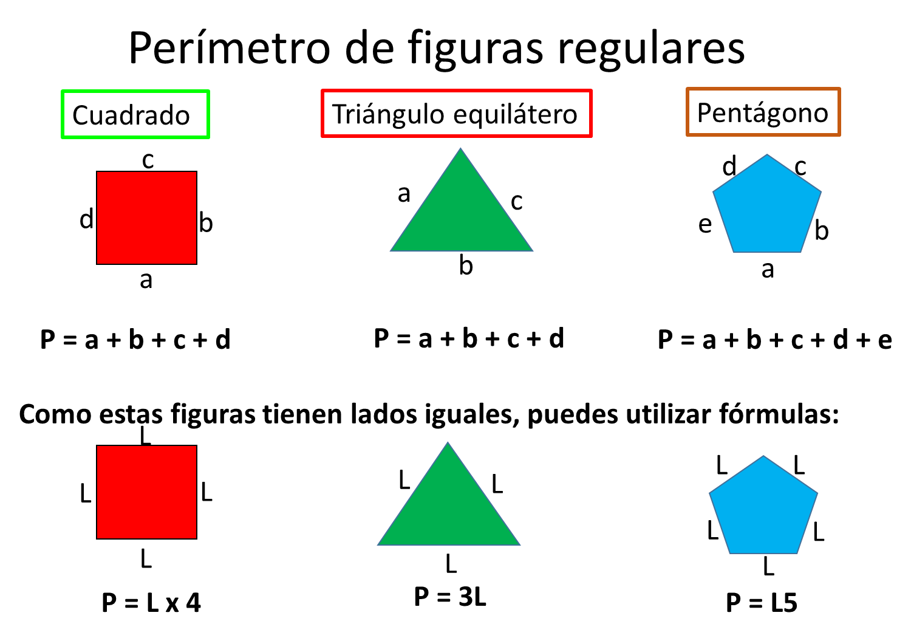
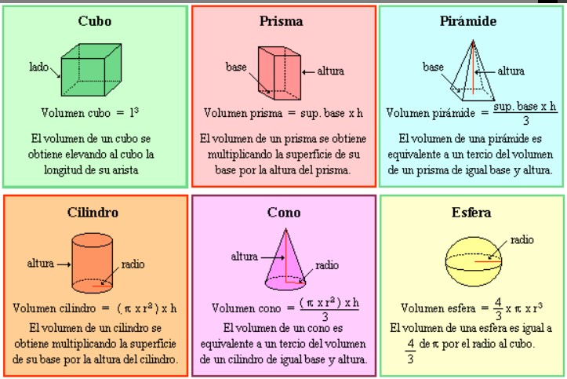

Cuando se habla de qué es la geometría, se habla de la rama de la matemática que se encarga de estudiar las medidas, formas y proporciones espaciales de las figuras, que se definen por una cantidad limitada de puntos, rectas y planos. Estas formas son conocidas como cuerpos geométricos. El concepto de geometría es de gran utilidad para la arquitectura, ingeniería, astronomía, física, cartografía, mecánica, balística, entre otras disciplinas.
 "En concreto, entre las unidades que versan sobre dicha materia destacan todas aquellas que permiten que el alumno en cuestión aprenda todos los conocimientos necesarios sobre los elementos del plano, los polígonos, los triángulos, las traslaciones y giros, la semejanza o las áreas y volúmenes de los cuerpos geométricos".
Así, por ejemplo, a la hora de desarrollar esta última lección citada los estudiantes trabajarán sobre lo que es el prisma, el cilindro, el tetraedro, la esfera, el cubo o el tronco de la pirámide.
La geometría parte de axiomas (las proposiciones que se encargan de relacionar los conceptos); estos axiomas dan lugar a teorías que, mediante instrumentos de esta disciplina como el transportador o el compás, pueden comprobarse o refutarse.
Entre las distintas corrientes de la geometría, se destaca la geometría algorítmica, que usa el álgebra y sus cálculos para resolver problemas vinculados a la extensión.
La geometría descriptiva, por su parte, se dedica a solucionar los problemas del espacio mediante operaciones que se desarrollan en un plano donde están representadas las figuras de los sólidos.
La geometría analítica se encarga de estudiar las figuras a partir de un sistema de coordenadas y de las metodologías propias del análisis matemático.
Por último, podemos agrupar tres ramas de la geometría con diferentes características y alcances. La geometría proyectiva se encarga de las proyecciones de las figuras sobre un plano; la geometría del espacio se centra en las figuras cuyos puntos no pertenecen todos al mismo plano; mientras que la geometría plana considera las figuras que tienen la totalidad de sus puntos en un plano.
Como bien decíamos más arriba el nacimiento de esta disciplina se remonta al Antiguo Egipto, la geometría clásica basada en axiomas que predominaba por esos días se valía del compás y la regla para estudiar las distintas construcciones.Como la geometría no es plausible de errores, es que se desarrollaron los sistemas axiomáticos que proponían una disminución en el error y suponía un método sumamente riguroso. El primer sistema axiomático llegó como no podía ser de otra manera con quien hoy es considerado como el padre de la Geometría, el matemático griego Euclides.